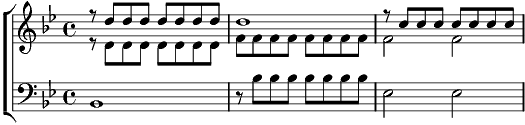

1. O… Qu'on me laisse à mes amours mortes
Il est temps de fermer la porte, Il se fait temps d'aller dormir
Je n'étais pas toujours bien mise, j'avais les cheveux dans les yeux
Mais c'est ainsi qu'il m'avait prise, Je crois bien qu'il m'aimait un peu…
Refrain:
Il pleut ---- sur le rivage
--- dans les yeux, ---- sur le visage
2. O… S'amuse seul dans mes cheveux,
Je n'étais pas toujours bien belle, Mais je crois qu'il m'aimait un peu
Ma robe a toujours ses reprises, Et j'ai toujours les cheveux fous
Mais c'est ainsi qu'il m'avait prise, Je crois que je l'aimais beaucoup
Refrain
3. O…Depuis le temps qu'on ne s'est vu
Et si je lui reste fidèle, A quoi me sert tant de vertu
Qu'on me laisse à mes amours mortes, Qu'on me laisse à mes souvenirs
Mais avant de fermer la porte, Qu'on me laisse le temps
d'en rire
Refrain